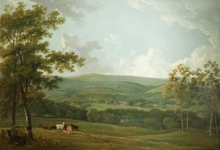

Towneley from A to Z

Towneley from A to Z
George Barret the elder (1728/1732-1784), was a landscape painter born in Dublin. He had little official training so mainly taught himself. He moved the London in the early 1760s and became a founding member of the Royal Academy. Barret specialised in painting the country seats of gentlemen, adding an Italianate warm light to the local landscape.
Around 1777 he visited Towneley before making a painting for Charles Townley (1737-1805). This view shows Towneley Hall from the north-east. Barret enhanced the scene by bringing the hills behind the Hall closer to add variety to the skyline, and by the adding or adapting the foreground trees and deer to make the view more picturesque.
In Charles Townley's account book there is an item for Jan 30th 1778 - "To Mr. Barret for his view of Townley £50 Ditto in addition £30".
The painting was engraved by James Basire for the second edition of Whitaker's History of Whalley and the engraving was also used in the book "The Beauties of England and Wales" by Stewart and Burnet (1808).
The work was purchased from Christie's sale in London on May 19th 1939 [paoil119].